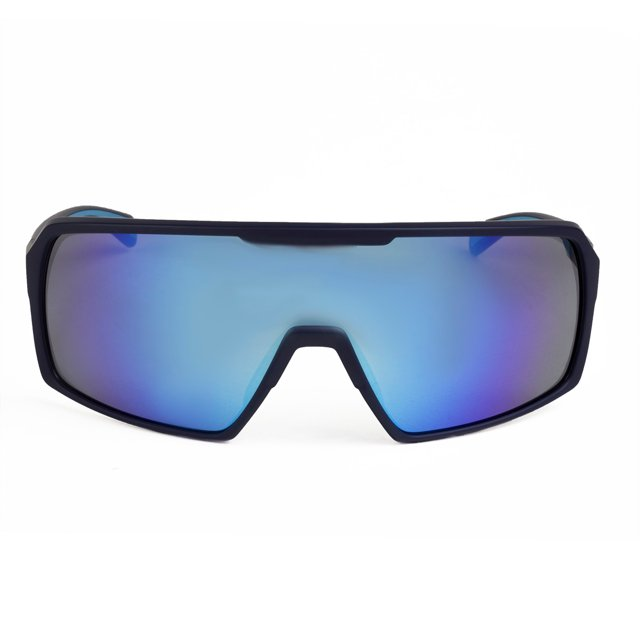

Ocúlos para Alta Perfomerce
MODELO SPEEDRUN XD
Desenvolvido para atletas que exigem alto desempenho, conforto e estilo, o SpeedRun XD é um óculos esportivo projetado especialmente para corridas de rua, trilhas e treinos ao ar livre. Seu design aerodinâmico proporciona maior ventilação, evitando o embaçamento das lentes, e sua estrutura leve garante estabilidade mesmo nos movimentos mais intensos.
Data de criação: 01/01/2020
Categoria: Esportivo